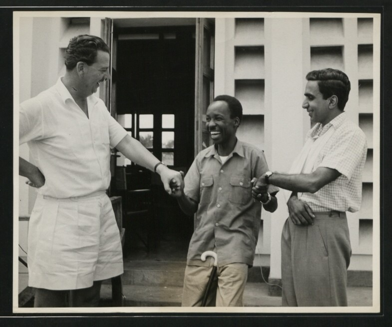

Vitabu
Historia ya Tanganyika, Afrika Mashariki, ukoloni, uhuru na viongozi mbalimbali.
Soma ZaidiKituo kikubwa cha kuhifadhi, kutafiti na kusambaza historia ya Tanganyika, Tanzania na Afrika kupitia nyaraka halisi, vitabu, picha, mahojiano, makala na ushahidi wa kihistoria.

Mohamed Said amekuwa miongoni mwa watafiti wa historia waliotumia maisha yao kukusanya kumbukumbu muhimu kuhusu harakati za uhuru, viongozi wa kitaifa, wanaharakati, jamii, taasisi na matukio yaliyounda historia ya Tanzania.
Kupitia archive hii, kila mtu anaweza kupata taarifa sahihi zinazotegemea ushahidi badala ya simulizi zisizo na rejea.
Historia ya Tanganyika, Afrika Mashariki, ukoloni, uhuru na viongozi mbalimbali.
Soma ZaidiBarua, hati rasmi, magazeti, kumbukumbu na taarifa za kihistoria.
FunguaMkusanyiko mkubwa wa picha za viongozi, wanaharakati na matukio muhimu.
TazamaMashujaa waliosahaulika na waliounda historia ya taifa.
ExploreKipindi kilichoanza kubadili historia ya Tanganyika kwa namna kubwa.
Mwanzo wa harakati mpya za kisiasa kuelekea uhuru wa Tanganyika.
Tanganyika ilipata uhuru wake tarehe 9 Desemba 1961.
Tuma maoni au ujumbe moja kwa moja kupitia WhatsApp au Fomu hapa chini.